| 行事記録・写真 | ☓☓ | テレマーク講習会①② |
| テレマークスキー講習会の２回目は前回と同じ斑尾高原スキー場で行われた。到着の朝は小雪が舞っていたが、宿舎で着がえゲレンデに出ると間もなくその雪も止み幸いにも４日間共絶好の日和に恵まれた。今回はついに１２名もの申込があり、なかでも頼もしい妙齢の美女の初参加や８４歳で驚異の挑戦を続けるご婦人など、多才なメンバーによる楽しく、かつ厳しい講習会となった。 ペンションオーナーによる講習を踏まえ、各自テレマークスキーの奥深い技術に挑み、夫々がレベルアップを確認した。夜はワインや地酒と心のこもった料理に舌づつみをうちつつ和やかで、しかも最高の仲間達とのシーズン最後の充実した講習会であった。シリーズ３回の講習会を通して一人の怪我人も無かった事もテレマーくスキーが我々高齢者を含めた幅広い層に支持される魅力であることを再確認した。 （実施報告より） |
A | 開 催 日 | 2013年1月21日-24日と3月5日-8日 | ||
| リーダー | 名取雄一・吉田登美子 | ||||
| 写真・文 | 西田進 （実施報告も使用した） | ||||
| 参加人数 | 10名と12名 | ||||
| テレマーク講習会① |
| テレマークスキー講習会①は、写真は少ないが、簡単に報告する |
| 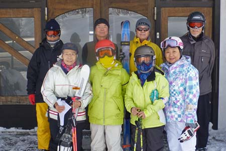 | A | 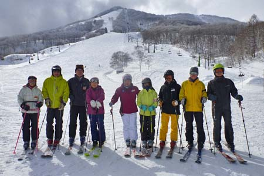 |
| フジオ ペンションの玄関にて | 斑尾高原スキー場のゲレンデボトムで記念写真 |
| 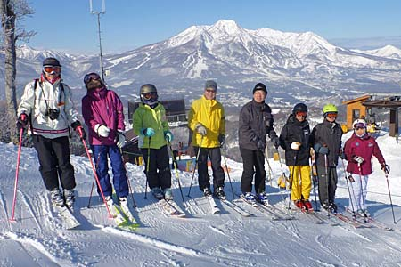 | A | 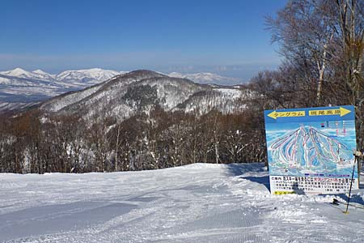 |
| 斑尾高原スキー場とタングラムスキーサーカスの境界で 妙高山を背景に勢ぞろい |
スキー場の標識 （左）タングラム （右）斑尾高原 |
| 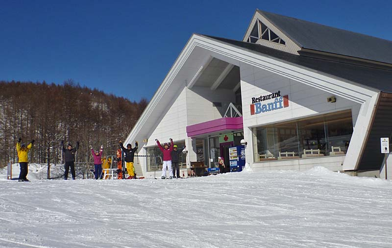 |
| 滑り終えて、レストラン バンフの前で万歳！ |
| テレマーク講習会② |
| 斑尾のゲレンデトップの絶景ポイントへ |
| 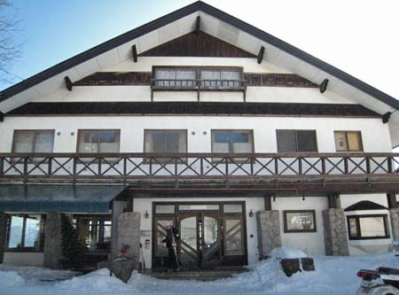 | A | 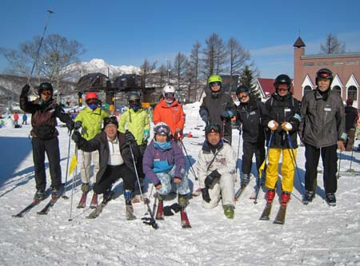 |
| フジオ ぺンションを出発 | 斑尾高原ホテル前で準備体操を済ませて、いざゲレンデへ |
| 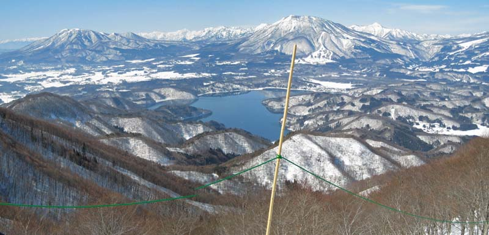 |
| ゲレンデトップからの景色 直下は野尻湖 左から、飯綱山、黒姫山、裾野だけ見えているのが妙高山、背後は北アルプスの山々 |
| 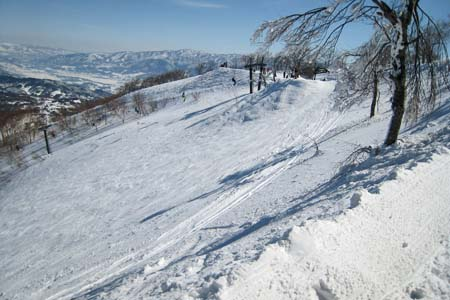 | A | 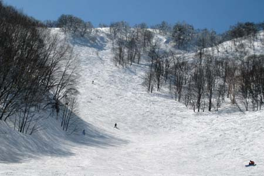 |
| ゲレンデトップからの上級者コースは足がすくむ | 中級コースまで滑って来て、ホットする |
| テレマークの講習の記録ビデオ |
| ペンション フジオのオーナーによるテレマークスキー講習のビデオでである |
| 山頂絶景ポイントから滑る |
| 各自の滑りをチェックする |
| ストックを使わずに体で滑る練習 先落としターンの切り替え動作の練習 |
| ある日の夕食 |
| スキーの後の夕食は毎日楽しみだ。日替わりのフランス料理や鍋料理、それにビール、ワイン、日本酒と来たら堪えられない。 |
| 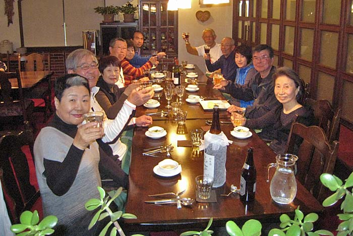 |
| 乾杯！ |
| 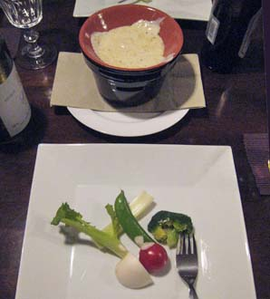 | A | 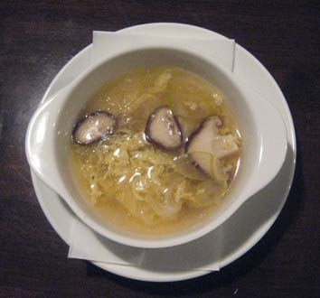 | A | 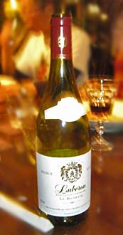 |
| 新鮮な野菜に溶けたチーズを付けて頂くオードブル | スープ | ワインは赤と白 |
| 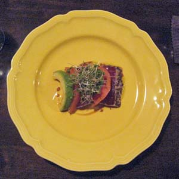 | A | 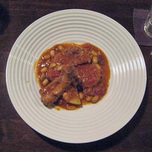 | A | 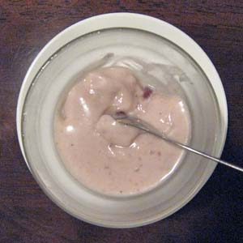 |
| 魚料理 | 肉料理 | デザート |
| 夕食後の歓談 |
| 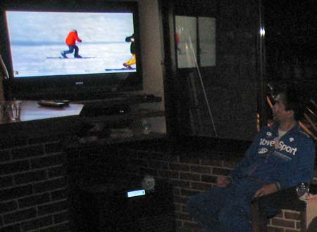 | A | 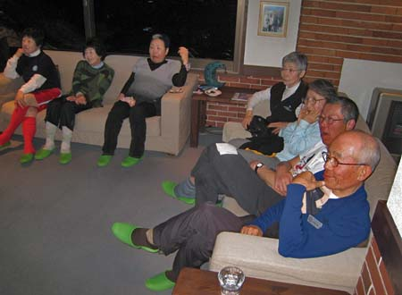 |
| 食後は、差し入れのアルコールを頂く。 肴は、とれとれのビデオ。 楽しくもあり、冷や汗をかく一時でもある。 | ||
| ある日の朝食 |
| 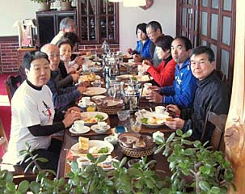 | A | 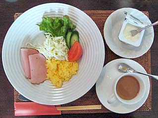 | A | 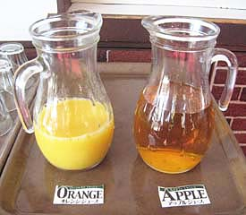 |
| 朝食は何時も洋風。お勧めは信州産のリンゴジュース | ||||
| 打ち上げパーティ |
| 最後の日は午前中で切り上げて、ゲレンデ下の大衆食堂「レストラン ウェストバレー」で打ち上げ。この店、名前はかっこいいが、要するに「おふくろの味」。 |
| 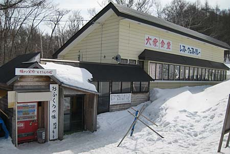 | A | 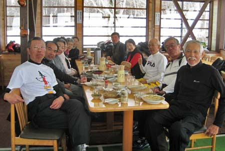 |
| クリスタルコースの最下部にある大衆食堂 | 地酒をグラスの受け皿に溢れるほど注いでくれるので、呑兵衛には評判の店 |
| 天候に恵まれ、ゲレンデ最高部の絶景を楽しみ、急斜面に肝を冷やし、難しいけれども誠に有益なオーナーのレッスンを受け、いつもながらのオーナー夫人の心尽くしのご馳走を頂た、クラシックスキークラブのテレマーク講習会であった。 来年の再会が今から待ち遠しい。 |